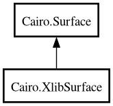

Cairo.XlibSurface – cairo Reference Manual
XlibSurface
Object Hierarchy:

Description:
[
CCode
( cname =
"cairo_surface_t"
, ref_function =
"cairo_surface_reference"
, type_id =
"cairo_gobject_surface_get_type ()"
, unref_function =
"cairo_surface_destroy"
) ]
[
Compact
]
public
class
XlibSurface
:
Surface
Namespace:
Cairo
Package:
cairo
Content:
Creation methods:
public
XlibSurface
(
void
* dpy,
int
drawable,
void
* visual,
int
width,
int
height)
public
XlibSurface.for_bitmap
(
void
* dpy,
int
bitmap,
void
* screen,
int
width,
int
height)
Methods:
public
int
get_depth
()
public
void
*
get_display
()
public
int
get_drawable
()
public
int
get_height
()
public
void
*
get_screen
()
public
void
*
get_visual
()
public
int
get_width
()
public
void
set_drawable
(
int
drawable,
int
width,
int
height)
public
void
set_size
(
int
width,
int
height)
Inherited Members:
All known members inherited from class Cairo.Surface
copy_page
finish
flush
get_content
get_device
get_device_offset
get_device_scale
get_fallback_resolution
get_font_options
get_reference_count
get_type
get_user_data
has_show_text_glyphs
map_to_image
mark_dirty
mark_dirty_rectangle
set_device_offset
set_device_scale
set_fallback_resolution
set_user_data
show_page
status
supports_mime_type
unmap_image
win32_get_image
write_to_png
write_to_png_stream